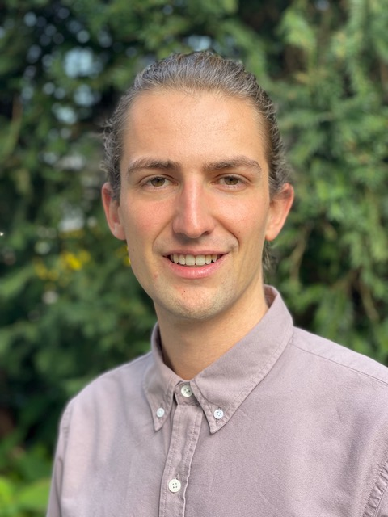

People

|
Mark D Robinson |
|
Twitter @markrobinsonca GitHub markrobinsonuzh Google Scholar |
|
| My research interests are diverse, but more-or-less encompass the general application of statistical methods and data science to experimental data with biological applications. Often, this is within the context of genomics data types, but we are interested in methodological challenges and robust solutions in data, generally. We also try to be modern scientists, with a focus on reproducibility (repos for code) and open science (preprints). | |
|
PhD in Medical Biology (2008), University of Melbourne (Walter and Eliza
Hall Institute) MSc in Statistics (2001), University of British Columbia BSc in Applied Mathematics and Statistics (1999), University of Guelph |

|
Izaskun Mallona |
|
Website Google Scholar |
|
| I am mainly interested in gene expression modulation, as it lays the ground for any cell fate. The questions which excite my curiosity the most are: How are gene expression programs coded? and maintained? how do they adapt during development? and disease? To mine the regulation metastructure genome-wide I’m fond of integrating gene expression and epigenomic data, and to develop methods for doing so. | |
|
BSc in Computer Engineering (2014), Open University of Catalonia PhD (2012), Technical University of Cartagena MSc in Agriculture Engineering (2008), Technical University of Cartagena MSc in Biology (2007), University of Murcia |
| Pierre-Luc Germain | |
|
GitHub plger Google Scholar |
|
| I gradually shifted from the humanities to bioinformatics towards the end of my PhD, worked a lot in the past on linking chromatin alterations to gene expression, and currently work mostly on the analysis of short RNA-seq and single-cell RNA-seq, as well as pre- and post-transcriptional regulation of gene expression especially in the context of neurodevelopment. I have a shared position with the ETH’s D-HEST Institute for Neurosciences. | |
|
PhD in Philosophy of science (2014), SEMM and University of Milan MA in Philosophy (2009), University of Montreal BA in Philosophy (2007) |

|
Almut Lütge |
| I’m a PhD student with a background in Molecular Biotechnology, but already during my master I focused on Bioinformatics. I’m interested in all kinds of genomic analysis, but mainly worked with transcriptomic data, so far. My PhD project is about methods in single cell RNAseq and part of a Sinergia collaboration on defining the identity and differentiation pathways of the immune-stimulating fibroblastic tumor stroma. | |
|
MSc in Molecular Biotechnology (2018), University of Heidelberg BSc Molecular Biotechnology (2013), University of Heidelberg |

|
Anthony Sonrel |
|
LinkedIn
|
|
| I am a PhD student that joined the Robinson Lab as part of the Life Science Zürich Graduate School. Through my past projects in academia and industry I worked on various topics such as NGS, GWAS summary statistics, epigenetic analyses (ChIP/ATAC-seq) and deep neural networks. In my current project, I’m evaluating and developing tools (mainly R packages) for single-cell RNA sequencing datasets. More specifically, I’m interested in developing new methodologies and new effective tools. | |
|
MSc in Molecular Life Sciences - Bioinformatics (2018), University of
Lausanne BSc of Science in Biology (2015), University of Lausanne |

|
Reto Gerber |
| I joined the Robinson Lab as a PhD student after working as a Research Assistant in the group. During this time I worked on scRNA-seq data from Synovial tissue in collaboration with USZ. Furthermore I developped pubassistant.ch (R shiny app to help consolidate publication profiles of researchers) and censcyt (method for differential abundance analysis in cytometry where a covariate is subject to censoring). | |
|
MSc of Science in Computational Biology and Bioinformatics (2020), ETH,
University of Zürich BSc of Science in Biology (2017), University of Zürich |

|
Emanuel Sonder |
|
Twitter @EmanuelSonder GitHub emsonder |
|
| After finishing my Master’s Thesis in the Robinson Group, I started a shared PhD position with the Schratt lab. I have a general interest in the analysis of epigenetic data (ATAC-seq, WGBS). My PhD project is focused on the reverse engineering of cell type-specific transcriptional networks by integrating different data modalities. The overarching goal is to provide insights in brain cell type specific responses to different stressors when compared with neuronal activity. | |
|
MSc in Computational Biology and Bioinformatics (2021), ETH Zürich,
University of Zürich BSc in Biology (2018), ETH Zürich |

|
Vladyslav Korobeynyk |
|
GitHub vkorobeynyk |
|
| I did my master thesis in single cell analysis of the adult mouse hippocampus in Jessberger Lab, HIFO, UZH. Shortly after, I started working as an intern in Systems Biology group at Roche, where I gained experience in ML and different type of sequencing technologies. Currently I am doing a shared PhD with Jessberger Lab, where my project is based on using single-cell and spatial transcriptomics data to identify molecular changes, mainly in the neurogenic niche, that drive neurogenesis to decline with age. | |
|
MSc in Biochemistry (2021), University of Zurich BSc in Biochemistry (2017), University Nova of Lisbon |

|
David Wissel |
| I am a shared PhD student between the Robinson Lab at UZH and the BoevaLab at ETH. I am broadly interested in survival analysis, single-cell and spatial transcriptomics as well as applications of machine learning to all of these. | |
|
MSc Statistics (2021), ETH Zurich BSc Business Administration (2019), Free University of Berlin |

|
Siyuan Luo |
| I’m an external PhD student from the von Meyenn lab with a background in computational biology and bioinformatics. During my master study, I worked on various topics including copy number variation and TCR/BCR repertoire analysis. Now I’m mainly interested in analyzing single-cell epigenetic data (ATAC-seq/CUT&Tag). My PhD is about methods for single-cell multi-omics data to reveal the interplay between the epigenetic layers and transcriptomics and provide insights for chronic diseases like obesity and ageing. | |
|
MSc in Computational Biology and Bioinformatics (2021), ETH Zürich,
University of Zürich BSc in Biotechnology (2018), Harbin Institute of Technology |
| Martin Emons | |
|
Twitter @EmonsMartin GitHub mjemons |
|
| I am a PhD student in the Robinson Group since 2022 in the Epidemiology and Biostatistics PhD program. My general interest lies in the development of methods for biological and biomedical data science. In my master studies I worked on various topics such as statistical analysis of temporal trends or survival analysis at Roche Diagnostics. Currently, I am interested in spatial transcriptomics and the challenges in this new field. | |
|
MSc in Computational Biology and Bioinformatics (2022), ETH Zürich,
University of Zürich BSc in Biology (2019), University of Bern |
|  | Samuel Gunz |
|
Twitter @samuelgunz GitHub sgunz |
|
| I am a PhD student in the Robinson lab as part of the Epidemiology and Biostatistics program of the Life Science Graduate School Zurich. During my past studies, I worked with all sorts of biological data, ranging from microbial community analysis to characterizing epigenetic modifications in cancer. During this time, I acknowledged the importance of having robust and reproducible tools in research and that my interest lies in developing such. My PhD project will focus on methods for analyzing spatial omics data. | |
|
MSc in Computational Biology and Bioinformatics (2022), ETH Zurich,
University of Basel and University of Zurich BSc in Biology (2018), University of Zurich |
| Peiying Cai | |
| In February 2023, I started working as a PhD student in the Robinson lab. Previously, I worked on developing analysis tools and pipelines to identify spatially variable genes from spatial transcriptomics data. My PhD research will focus on the development of statistical methods in bioinformatics, mostly for single-cell RNA-seq and spatial transcriptomics data. | |
|
MSc in Biostatistics (2022), University of Zürich BSc of Science in Statistics (2019), Xiamen University |

|
Daniel Incicau |
|
LinkedIn DanInci |
|
| I am a Master’s student in Computational Biology and Bioinformatics. I’m currently working on my thesis which involves evaluating cell phenotyping methods in highly multiplexed imaging, with a focus on mass cytometry images. I have a particular interest in immunology and I’m your typical functional programming enthusiast. | |
|
MSc in Computational Biology and Bioinformatics (ongoing), ETH
Zürich BSc in Computer Engineering (2020), Polytechnic University of Timisoara |
| Jiayi Wang | |
|
LinkedIn |
|
| I am a Master’s student in Computational Biology and Bioinformatics. I started as a part-time intern research student in the Robinson Group since March 2023, working on disentangling type and state effects on expression variability to improve analysis and interpretability of scRNA-seq data. Since November 2023, I also started working on my Master’s thesis on improving an R package for ATAC-seq analysis to identify motif or annotation-related peak accessibility changes. | |
|
MSc in Computational Biology and Bioinformatics (ongoing), ETH
Zürich BSc in Biomedical Sciences (2021), University College London |
| Sarusan Kathirchelvan | |
| I am a Master’s student in Computational Biology and Bioinformatics. I am currently working on my thesis involving the application of ensemble clustering in spatial transcriptomics and evaluating the spatial homogeneity, and the optimal cluster numbers of those detected clusters, to improve the spatial domain detection problem as well as to transition from a supervised to an unsupervised data-driven clustering. | |
|
MSc in Computational Biology and Bioinformatics (ongoing), ETH
Zürich BSc in Computational Sciences (2022), University of Basel |
Alumni
- Yin Guo (visiting PhD student from Xi’an Jiaotong University)
- Helena Crowell (PhD student; author of CATALYST, muscat, SpatialExperiment; now postdoc at CNAG, Barcelona
- Stefan Milosavljevic (PhD student shared with Shimizu group; author of ARPEGGIO; now Biomedical Data Engineer at Swiss Data Science Center)
- Simone Tiberi (postdoc; author of BANDITS and distinct; now Assistant Professor at Università di Bologna)
- Dominique Paul (research assistant)
- Hao Lyu (visiting PhD student)
- Elyas Heidari (Research assistant; author of SageNet; now PhD student at EMBL Heidelberg)
- Vladimir B. C. de Souza (PhD student; author of lrRNAseqVariantCalling)
- Imran Fanaswala (Research assistant; founder of YugaCell)
- Stephan Schmeing (PhD student; author of ReSeq)
- Ahmad Al Ajami (MSc student)
- Kathi Hembach (PhD student; author of DISCERNS; co-author of ARMOR)
- Stephany Orjuela (PhD student; author of DAMEfinder; co-author of ARMOR; now Scientific software developer at Oncobit)
- Will Macnair (Postdoc; author of SampleQC; now Data Scientist at Hoffman La Roche)
- Ruizhu (Fiona) Huang (PhD student; author of treeclimbR, TreeSummarizeExperiment, co-author of ARMOR; now Biostatistician at Cardio-CARE)
- Joanna Zyprych-Walczak (visiting professor)
- Charlotte Soneson (postdoc, investigated various aspects of RNA-seq data and method benchmarking; now at FMI)
- Helen Lindsay (postdoc, author of CrispRVariants; now at EPFL)
- Charity Law (postdoc, worked on differential splicing; now at WEHI)
- Andrea Riebler (postdoc, author of BayMeth in Repitools package; now at NTNU)
- Ian Morilla (postdoc, involved in differential expression analysis using de novo RNA-seq assemblies; now at INSERM)
- Lukas Weber (PhD student, compared CyTOF clustering algorithms, author of diffcyt, reviewed benchmarking; now at JHU)
- Xiaobei Zhou (PhD student; author of edgeR robust)
- Malgorzata Nowicka (PhD student, author of DRIMSeq and cytofWorkflow; now at Hoffman La Roche)
- Hadi Gharibi (PhD student, analyzed BS-seq data; now at Uni. Tehran)
- Andrea Komljenovic (PhD student, analyzed DNA methylation data; now at UNIL)
- Olga Nikolayeva (PhD student, analyzed PacBio DNA-seq data)
- Lourdes Rosano González (MSc student, analyzed transformations of CyTOF data; now at ETH NEXUS)
- Katarina Matthes (MSc student, compared differential splicing methods)
- Dania Machlab (MSc student, analyzed allele-specific methylation from BS-seq data; now at FMI)
- Buildman Biyong (MSc student, established components of CrispRVariantsLite)
- Angelo Duò (MSc student, compared scRNA-seq clustering algorithms; now at Scailyte)
- Amr Elriedy (MSc student, analyzed isoform detection using PacBio cDNA-seq; now at University of Oxford)
- Romy Schleiss (MSc student, compared normalization for CyTOF data)